① 先定用途，再选方法。
MISEV2023 不强制要求或禁止任何技术或标志物，强调所选技术应“适合目的”（fit for purpose）并完整报告 [1]。组学研究对共分离物最敏感，提取方法会显著影响组学结果 [2]；功能和转化研究则更看重活性保持与可放大性 [3,4]。
MISEV2023 不强制要求或禁止任何技术或标志物，强调所选技术应“适合目的”（fit for purpose）并完整报告 [1]。组学研究对共分离物最敏感，提取方法会显著影响组学结果 [2]；功能和转化研究则更看重活性保持与可放大性 [3,4]。
由于 EV 与多种非囊泡颗粒（NVEP）在大小、密度上重叠，按不同物理/生化性质依次组合的分离策略越来越常用，可提高特异性 [1]；一项多样本比较研究未发现任何方法能得到 100% 纯的 EV [5]。2015 年 ISEV 全球调查中，59% 的受访者组合使用多种方法 [6]。
按 MISEV2023 报告来源、预处理、分离和储存的全部参数，并用多类互补证据（颗粒数量与大小、形貌、蛋白标志、纯度指标）表征 EV [1]。
按“样本来源 × 下游用途 × 优先指标”给出起点方案，规则与依据见 recommender-rulesv1.0.json。推荐逻辑基于 MISEV2023 及各方法已发表的性能比较 [1,5,7]，只是起点，仍需用自己的样本小试验证。
按“分离原理”理解每种方法，才能判断它会共分离什么、损失或损伤什么 [1]。
从样本到表征：EV 研究总流程
左侧为常见样本来源：细胞培养瓶、抗凝采血管及离心后的血浆（上层淡黄）、尿杯、脑脊液与唾液管；各样本汇入“浓缩（中空纤维滤柱、超离管）→ 纯化（多孔填料色谱柱）→ 表征（颗粒追踪、电镜、蛋白印迹）”三段流程，最右为脂双层囊泡。
最常用的参照方法
差速超速离心（dUC）
逐级离心：低速沉淀细胞，中速沉淀碎片与较大颗粒，上清最后在超速离心机的固定角转子中高速离心；小 EV 沉淀位于倾斜管的外侧底壁。放大圈示脂双层囊泡沉淀，夹杂少量蛋白，且有囊泡相互粘连（提示高速离心可诱导聚集）。
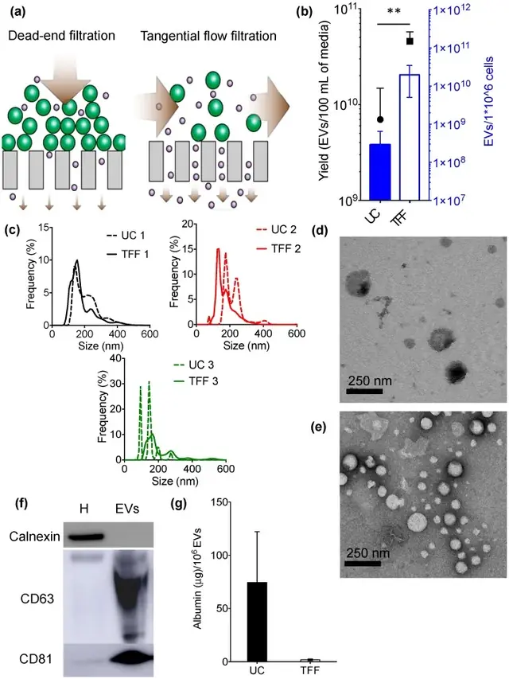
TFF 与超速离心正面对比：产量、粒径、形貌、标志物和白蛋白残留
Reproduced from Busatto S, Vilanilam G, Ticer T, et al., 2018, Cells Figure 1, CC BY 4.0, no changes. DOI · PMC · 文献 [4]
看“怎么读”与原文图注 ↓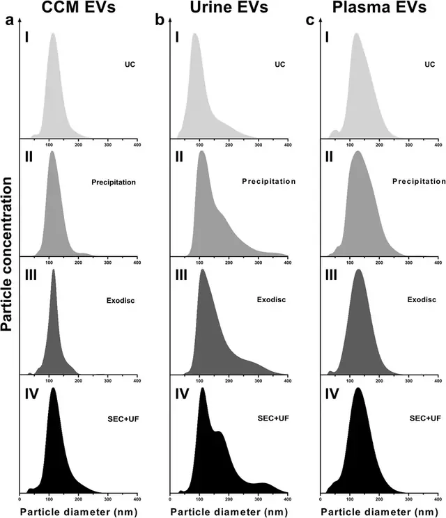
同一批样本、四种方法：NTA 粒径分布长什么样
Reproduced from Dong L, Zieren RC, Horie K, et al., 2020, J Extracell Vesicles Figure 2, CC BY 4.0, no changes. DOI · PMC · 文献 [5]
看“怎么读”与原文图注 ↓纯度上限高
密度梯度离心（DGUC，碘克沙醇）
左：离心前的分层碘克沙醇梯度；中：水平转子（吊篮甩平）；右：长时间离心后，低密度脂蛋白浮在顶部，EV 在梯度中段形成条带，致密蛋白聚集体沉于底部；旁边为自上而下分段收集的级分，中段级分被标出。放大圈示 EV 带中仍混有大小相近的小颗粒，对应 HDL 与 EV 密度重叠、单靠密度无法去除。
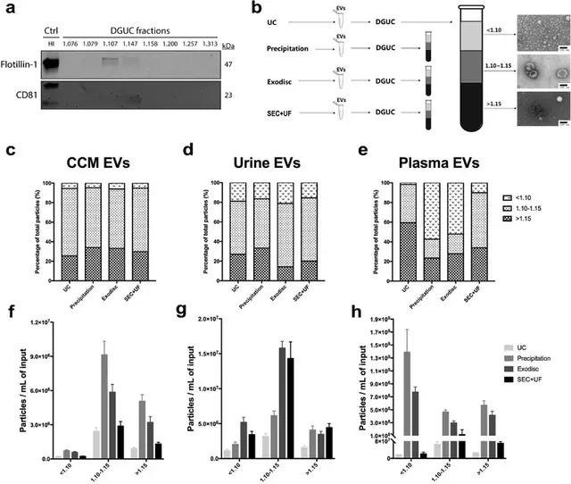
密度梯度分级：EV 在哪一层，脂蛋白和蛋白聚集体在哪一层
Reproduced from Dong L, Zieren RC, Horie K, et al., 2020, J Extracell Vesicles Figure 9, CC BY 4.0, no changes. DOI · PMC · 文献 [5]
看“怎么读”与原文图注 ↓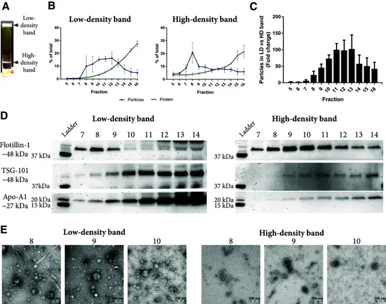
血浆“两步法”：密度垫 + SEC 把 EV 与脂蛋白分开
Reproduced from Karimi N, Cvjetkovic A, Jang SC, et al., 2018, Cell Mol Life Sci Fig. 4, CC BY 4.0, no changes. DOI · PMC · 文献 [17]
看“怎么读”与原文图注 ↓温和，保功能
尺寸排阻色谱（SEC）
样本加到多孔填料柱顶。放大圈示：EV（青色）体积大，不进入填料孔隙，从珠间空隙快速通过；游离蛋白（珊瑚色小点）进入孔隙、滞留更久。下方级分管显示 EV 先在早期级分流出，蛋白在后期级分流出。
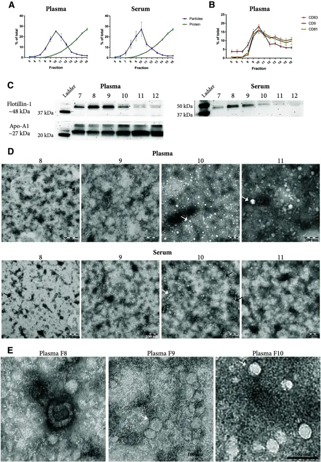
SEC 洗脱曲线：颗粒峰先出、蛋白峰后出——但 HDL 会跟着 EV 一起出来
Reproduced from Karimi N, Cvjetkovic A, Jang SC, et al., 2018, Cell Mol Life Sci Fig. 2, CC BY 4.0, no changes. DOI · PMC · 文献 [17]
看“怎么读”与原文图注 ↓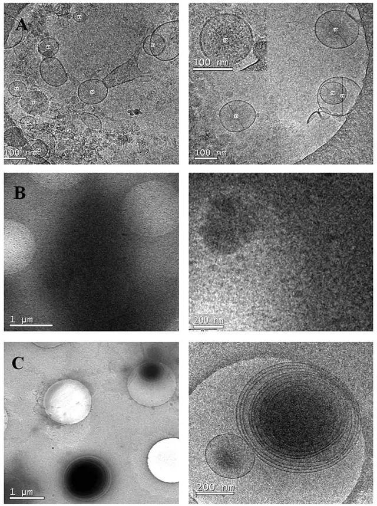
冷冻电镜对比：SEC 见到单个囊泡，PEG 沉淀只见到一片致密杂质
Reproduced from Gámez-Valero A, Monguió-Tortajada M, Carreras-Planella L, et al., 2016, Sci Rep Figure 5, CC BY 4.0, no changes. DOI · PMC · 文献 [19]
看“怎么读”与原文图注 ↓浓缩利器
切向流过滤（TFF）
闭合回路：储液瓶中的培养上清经蠕动泵送入中空纤维滤柱，截留液（含 EV）返回储液瓶持续浓缩，透过液从滤柱侧口流入废液瓶；压力表监测管路压力。放大圈示液流平行于膜面，EV 留在纤维腔内，水和小分子蛋白穿过膜孔。
TFF 与超速离心正面对比：产量、粒径、形貌、标志物和白蛋白残留
Reproduced from Busatto S, Vilanilam G, Ticer T, et al., 2018, Cells Figure 1, CC BY 4.0, no changes. DOI · PMC · 文献 [4]
看“怎么读”与原文图注 ↓方便但特异性最低
聚合物（PEG）沉淀
向样本加入聚合物溶液，4 °C 孵育过夜；放大圈示长链聚合物形成网状结构、排挤水分子，把 EV 与蛋白团块、脂蛋白颗粒一并“网住”；经台式低速离心后得到较大的沉淀，放大圈显示其中 EV 与大量蛋白及其他颗粒混杂，纯度低。
冷冻电镜对比：SEC 见到单个囊泡，PEG 沉淀只见到一片致密杂质
Reproduced from Gámez-Valero A, Monguió-Tortajada M, Carreras-Planella L, et al., 2016, Sci Rep Figure 5, CC BY 4.0, no changes. DOI · PMC · 文献 [19]
看“怎么读”与原文图注 ↓亚群富集专用
免疫亲和捕获（磁珠）
样本中既有带目标四跨膜蛋白（如 CD63）的 EV，也有不带该标志的 EV 和游离蛋白。放大圈示磁珠表面的抗体只结合暴露目标抗原的囊泡；其余囊泡与蛋白不被结合。右侧磁力架把磁珠及其捕获的亚群吸到管壁，流穿液被吸走。
分析级
非对称流场流分离（AF4）与微流控芯片
左：AF4 薄通道侧视图，无固定相。沿通道为抛物线型层流，垂直方向的横向流（crossflow）穿过底部超滤膜；小颗粒扩散得更高、处于更快的流线，先流出；较大囊泡靠近膜、后流出。右：带进样口、蛇形通道和微柱阵列的微流控芯片示意。
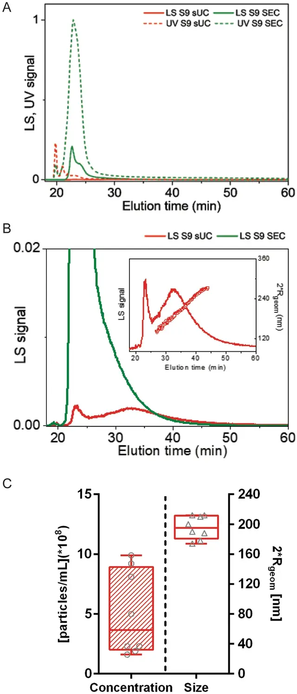
AF4 流场分离图（fractogram）：按洗脱时间读出颗粒大小
Reproduced from Holcar M, Ferdin J, Sitar S, et al., 2020, Sci Rep Figure 2, CC BY 4.0, no changes. DOI · PMC · 文献 [46]
看“怎么读”与原文图注 ↓exomere 的 AF4 洗脱曲线没有找到开放许可的原图，请看原文：Zhang H 2018 · Nat Cell Biol [30] · PMC 全文
每一步通常只按一种性质分离（沉降、密度、尺寸、电荷/抗原），而杂质往往在某一维度上与 EV 重叠；按不同性质依次组合可提高特异性 [1]。
评分为基于所引比较研究和 MISEV2023 方法学描述的定性共识（同一样本类型内比较），不是测量值；实际表现随样本与操作波动很大——把它当选型地图，不要当绝对指标 [1,5,7,12]。“耗时”一栏为根据所引方案离心/运行时间加上操作时间的【估算】。
| 方法 | 纯度 | 得率 | 耗时【估算】 | 最适合 | 主要依据 |
|---|---|---|---|---|---|
| 差速超速离心 dUC | 中 | 中（血浆研究：单次约 40%，两次约 16%） | 约 4–5 h（离心合计约 3 h 10 min） | 常规制备、文献对照 | [6,8,9,12] |
| 密度梯度 DGUC | 最高 | 低 | 约 1 天（梯度离心 18 h） | 组学、标志物 | [1,2,15] |
| SEC | 较高（脂蛋白除外） | 中高 | 柱上运行通常 <1 h，另加浓缩 | 功能实验、体液纯化 | [3,17,18] |
| TFF / 超滤 | 低（需搭配） | 高 | TFF 约 1 h（200 mL 级） | 大体积浓缩、放大制备 | [1,4,24] |
| 聚合物沉淀 | 最低 | 颗粒数最高（非 EV 特异） | 过夜（≥12 h）+ 约 1 h | 初步筛查 | [12,19,25] |
| 免疫亲和 | 目标亚群特异性高 | 低 | 数小时（依方案） | 特定亚群富集 | [1,26,27] |
| 微流控 / AF4 | 高尺寸分辨率，非 EV 特异 | 回收高但处理量小 | 依平台 | 微量样本分析、分级研究 | [1,5,30] |
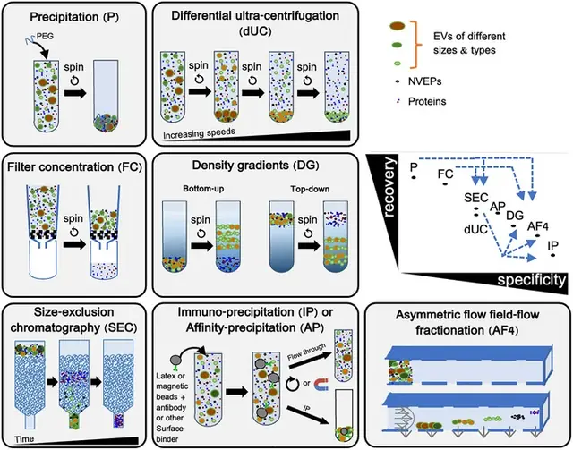
MISEV2023：各分离方法在“回收率 vs 特异性”坐标上的位置
Reproduced from Welsh JA, Goberdhan DCI, O'Driscoll L, et al., 2024, J Extracell Vesicles FIGURE 2, CC BY 4.0, no changes. DOI · PMC · 文献 [1]
看“怎么读”与原文图注 ↓样本质量在收集时就决定了上限：MISEV2023 建议尽早去除细胞，因为细胞破碎会形成类似 EV 的颗粒 [1]。
胎牛血清（FBS）含大量 EV，可改变受体细胞表型；18 h 超离（120,000×g）可去除约 95% 含 RNA 的 FBS EV，1.5 h 不够 [32]；也有研究用 100,000×g 18 h [2]。但无论自制还是商品化“去 EV 血清”都会残留 EV，需验证 [1,33]；超离去除效果可能取决于稀释程度 [1]。也可用无血清/限定培养基窗口，但去 EV 血清和无血清培养都可能改变细胞生理和 EV 产生 [1]。应报告细胞身份、接种和收获密度、收获时活率及传代数 [1]。少数死亡细胞产生的 EV 就可能超过健康细胞产生的 EV，因此活率直接影响 EV 亚型构成和数量 [1]；具体活率阈值（如 >90%）无统一标准，属【实验室惯例】。收集窗口 24–48 h 为常见做法【实验室惯例】。
SEC / 密度梯度 / 免疫捕获按用途选一 [1]；最终换液到实验所需缓冲液，必要时再浓缩。
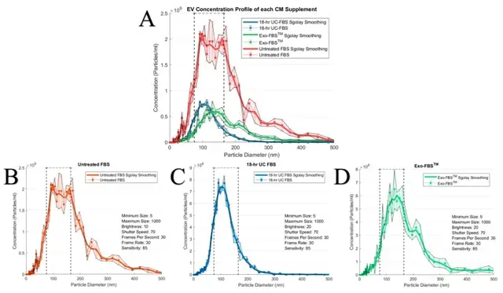
“去 EV 血清”并不等于“无 EV”：三种培养基的颗粒背景
Reproduced from Lehrich BM, Liang Y, Khosravi P, et al., 2018, Int J Mol Sci Figure 1, CC BY 4.0, no changes. DOI · PMC · 文献 [33]
看“怎么读”与原文图注 ↓供体、细胞纯度、分化/激活状态等都应作为产 EV 细胞的特征报告 [1]；不同组别应使用同一流程、同一批耗材平行提取【实验室惯例】。
在细胞状态良好时换成去 EV 或无血清培养基并收集 24–48 h 上清【实验室惯例】；过度汇合或饥饿过久可能增加死亡细胞，而少量死亡细胞的 EV 即可占据主导 [1]。
上清量大时 TFF 浓缩 → SEC 纯化 [3,4]；原代细胞上清量小时可用 dUC 或超滤粗提 → SEC【实验室惯例，依据上述方法特性】。体外功能实验要避免沉淀法共沉淀物带来的假象 [1,19]，必须设置“未经细胞条件化的培养基走同一流程”的空白对照 [1]。
以蛋白浓度替代 EV 浓度需谨慎且一般不推荐 [1]；功能实验同时报告颗粒数和蛋白量，批间先做颗粒数与标志物一致性检查再进入动物实验【实验室惯例】。
| 样本 | 主要干扰物 | 推荐路线 | 关键优化 |
|---|---|---|---|
| 细胞上清 | 血清来源 EV 与蛋白、死亡细胞来源颗粒 [1,32] | TFF/超滤 + SEC 或 dUC（± SEC/密度梯度）[2,3,4] | 去 EV 血清（验证残留）或无血清窗口；报告活率；设未条件化培养基对照 [1,33] |
| 血浆 | 血小板、脂蛋白、溶血产物、可溶/聚集蛋白 [1,34] | SEC（需去脂蛋白时联合密度分离）；避免单用沉淀法 [17,19] | 空腹采血（降低乳糜微粒）；粗针头减少血小板活化与溶血；尽快处理 [1]；ISTH 方案：采血后 <2 h 内、室温 2,500×g 15 min 离心两次（不用刹车）制备无血小板血浆 [35]；量化残余血小板 [36]；填写 MIBlood-EV [1,34] |
| 血清 | 凝血过程中血小板释放的 EV（可占血清 EV 的 50% 以上）[37] | 同血浆；EV 循环研究优先用血浆 [37] | 报告促凝剂与凝血时间 [34]；血清与血浆数据不可直接混用 [37] |
| 尿液 | Tamm–Horsfall 蛋白（尿调蛋白）聚合网罗 EV 并共分离；尿蛋白 [1] | 超滤浓缩 + SEC；或还原剂处理后 dUC [1,38,39] | DTT 等还原剂可解聚 THP 网络、释放 EV [38]，但也有报告得率改善有限 [39]，处理方式需写入方法；归一化尚无共识，可用计时尿排泄率或按渗透压/肌酐近似 [1,39] |
| 脑脊液 / 唾液等 | 总量低；黏液（唾液） | 超滤浓缩 + SEC；或免疫捕获【实验室惯例】 | 全程使用低吸附耗材【实验室惯例】；唾液先离心去黏液层并记录收集方式【实验室惯例】 |
| 组织 / 类器官 | 细胞与细胞碎片伪影 [1] | 依样本选择 | 重点追踪应在 EV 中被耗竭的细胞组分 [1] |
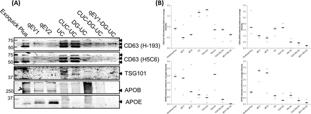
血清 EV 的“双面板”：EV 标志物与脂蛋白标志物同时检测
Reproduced from Brennan K, Martin K, FitzGerald SP, et al., 2020, Sci Rep Figure 6, CC BY 4.0, no changes. DOI · PMC · 文献 [7]
看“怎么读”与原文图注 ↓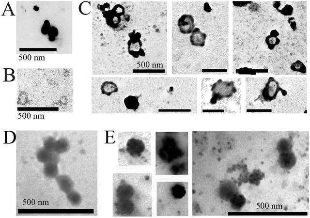
LDL 会“伪装”并粘附在 EV 表面：电镜下的样子
Reproduced from Sódar BW, Kittel Á, Pálóczi K, et al., 2016, Sci Rep Figure 7, CC BY 4.0, no changes. DOI · PMC · 文献 [22]
看“怎么读”与原文图注 ↓血浆“两步法”：密度垫 + SEC 把 EV 与脂蛋白分开
Reproduced from Karimi N, Cvjetkovic A, Jang SC, et al., 2018, Cell Mol Life Sci Fig. 4, CC BY 4.0, no changes. DOI · PMC · 文献 [17]
看“怎么读”与原文图注 ↓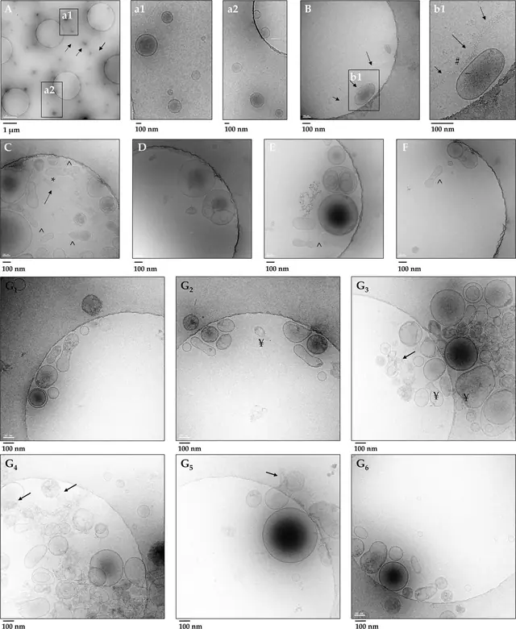
尿液 EV 被 THP（尿调素）纤维“网住”：还原处理前后冷冻电镜对比
Reproduced from Musante L, Bontha SV, La Salvia S, et al., 2020, Sci Rep Figure 2, CC BY 4.0, no changes. DOI · PMC · 文献 [47]
看“怎么读”与原文图注 ↓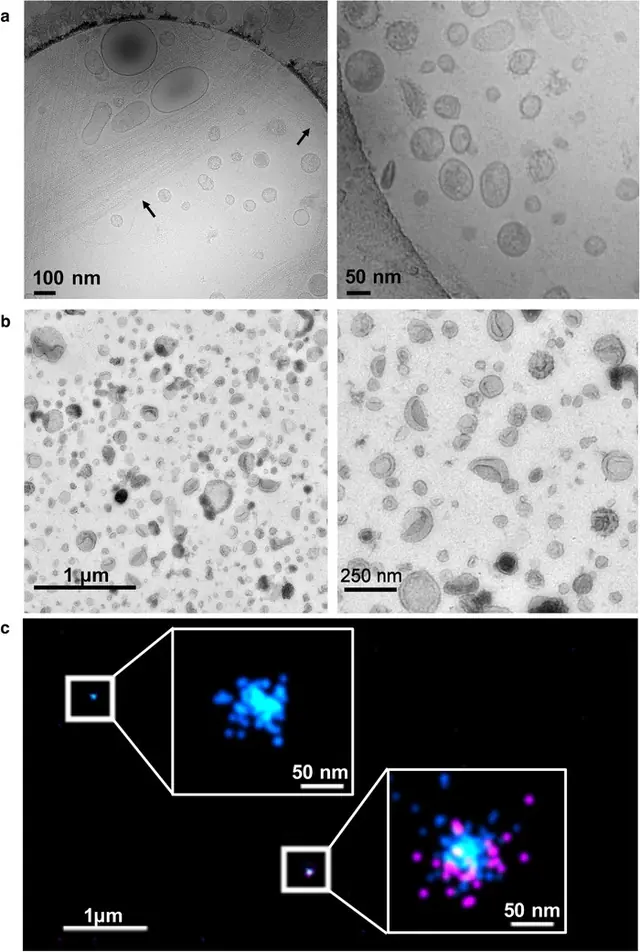
同一类尿液 EV，三种成像方式：冷冻电镜、负染 TEM、超分辨
Reproduced from Erdbrügger U, Blijdorp CJ, Bijnsdorp IV, et al., 2021, J Extracell Vesicles FIGURE 1, CC BY 4.0, no changes. DOI · PMC · 文献 [39]
看“怎么读”与原文图注 ↓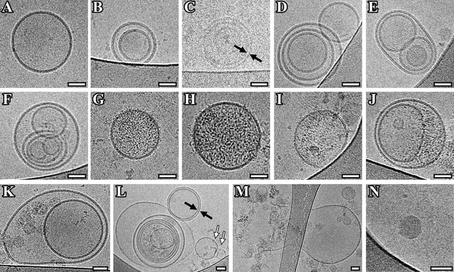
脑脊液 EV 的冷冻电镜：形态远不止“一个圆”
Reproduced from Emelyanov A, Shtam T, Kamyshinsky R, et al., 2020, PLoS One Fig 3, CC BY 4.0, no changes. DOI · PMC · 文献 [48]
看“怎么读”与原文图注 ↓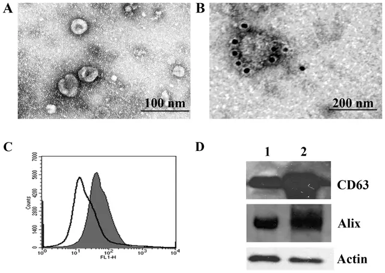
唾液外泌体的经典表征组合：电镜 + 免疫金 + 流式 + WB
Reproduced from Palanisamy V, Sharma S, Deshpande A, et al., 2010, PLoS One Figure 1, CC BY 4.0, no changes. DOI · PMC · 文献 [49]
看“怎么读”与原文图注 ↓尿液样本 DTT 还原处理前后的对比没有找到开放许可的原图，请看原文：Fernández-Llama P 2010 · Kidney Int [38] · PMC 全文

团子教练提醒
提取做完不等于拿到 EV。MISEV2023 并不规定某一种必须使用的技术或标志物 [1]，但要求用互补证据支持“EV”的结论；缺项时如实说明，不要用单一颗粒计数结果宣称“提取成功”。
勾选状态只保存在这台设备的浏览器里。
下面 4 张是帮助理解原理的 AI 示意图；真实数据长什么样，见下一节的文献原图。
纳米颗粒追踪分析（NTA）
样本经注射器注入样品池，激光束水平穿过液体，颗粒散射光形成亮点；上方显微物镜连接相机录像。右侧画面显示每个亮点的布朗运动轨迹，软件据扩散速度推算粒径并计数，下方为粒径分布曲线示意。
纳米流式（nFCM）
鞘液流体动力学聚焦把样本流压成极细的芯流，EV 逐个通过激光照射点；部分 EV 带荧光抗体标记。侧向散射光与荧光分别经透镜（荧光再经滤光片）进入两个检测器，右侧散点图中荧光阳性与阴性颗粒形成两群，可做单颗粒亚群分析。
透射电镜（TEM）与冷冻电镜
左：透射电镜镜筒剖面，电子枪发射的电子束经多级电磁透镜会聚，穿过载样铜网，到达底部探测器。中：铜网放大。右上：负染干燥样本中 EV 呈“杯状”塌陷伪影；右下：冷冻电镜在玻璃态冰中显示球形、双层膜清晰的囊泡，无杯状伪影。
Western blot 工作流程
依次为：EV 裂解液上样做 SDS-PAGE 电泳；湿转“三明治”（海绵—滤纸—凝胶—膜—滤纸—海绵）中蛋白从凝胶向正极转移到膜上；膜上一抗结合目标蛋白、酶标二抗放大信号；显影后的条带，最右泳道（细胞裂解物参照）出现 EV 泳道没有的条带，示意细胞内区室蛋白在 EV 中耗竭。
17 张图全部来自 CC BY 4.0 开放获取论文，逐篇核验许可（PMC OA 元数据、文章 XML、Europe PMC 三处一致），内容未作修改，仅转换为 WebP、缩小尺寸。每张图都给出原文图注、出处与 DOI；图片版权归原作者，按其原 CC BY 4.0 许可使用，不受本页许可约束。按仪器分组，可按样本类型筛选。
这个样本类型下暂时没有对应的开放许可原图。
怎么读这张图
这张图把细胞培养上清、尿液、血浆三类样本分别用超速离心（UC）、沉淀、Exodisc、SEC+超滤（SEC+UF）分离后，用 NTA 测得的粒径分布并排放在一起（每列一种样本，每行一种方法）。怎么读：横轴是颗粒直径（nm），纵轴是颗粒浓度；作者把每张图的峰高都调到量程的 95%，所以只能比较“形状”（峰位置、峰宽、拖尾），不能直接比较高低。一般认为小 EV 制备的主峰落在约 100–150 nm 附近且拖尾有限；尿液列可见部分方法出现更宽的肩峰和拖尾。注意：NTA 只数“颗粒”，蛋白聚集体、脂蛋白同样会被计入，单看粒径分布不能证明纯度，需与蛋白定量、Western blot 合看。
Particle size distributions of EV preparations separated by different methods from CCM, urine and plasma, measured by NTA. The concentration of particles in each bin of size was recorded. The bin width was 1.0 nm. In order to make the size distribution histogram visually comparable, the Y axis was adjusted to make the concentration of particles with modal size (the peak of the curve) as 95% of maximum scale in each figure. (a) Particle size distributions of CCM EV preparations; (b) Particle size distributions of urine EV preparations; (c) Particle size distributions of plasma EV preparationsReproduced from Dong L, Zieren RC, Horie K, et al., 2020, J Extracell Vesicles Figure 2, CC BY 4.0, no changes. DOI · PMC · 文献 [5]
怎么读这张图
（A）三种完全培养基叠加对比（已按稀释倍数校正）：红线为未处理 FBS，蓝线为 18 小时超速离心去 EV 的 FBS，绿线为商品化 Exo-FBS；（B–D）分别为三种培养基的单独测量（稀释 1:1000、1:250、1:333）；虚线框为作者定义的 75–165 nm EV 区间。怎么读：两种“去 EV”血清的颗粒浓度都低于未处理 FBS，但仍能测到明显的颗粒峰——也就是牛源 EV 仍然存在。实操上，应把“只含培养基、不接细胞”的空白培养基按同样流程提取，作为本底对照，从结果中扣除。
Concentrations and Size Distributions of the Complete Culture Media (CM) Conditions. Untreated fetal bovine serum (FBS)-supplemented complete CM and extracellular vesicles (EV)-depleted FBS-supplemented complete CM (ultracentrifugation (UC) and commercial) were prepared for EV particle analysis using the ZetaVIEW® PMX 110 instrument. Each sample replicate was an independent measure acquired on the instrument (total sample volume of 1 mL) and then grand averaged. Size distribution data was then analyzed and plotted by BPM ExoPlot, with filter and smoothing functions, as depicted in the Methods. For all complete CM conditions, graphical representation was set with a “sgolay smooth” smoothing function; this is an algorithm that is a built-in function to MATLAB® signal processing toolbox. Dashed threshold line was defined for EVs with diameters ranging from 75–165 nm. (A), Superposition of all three complete CM conditions on the same scaled axes with appropriately adjusted dilution factors to show relative concentration values across each complete CM condition. Individual graphs with detailed measurement parameters are presented for: (B), Untreated FBS-supplemented complete CM (n = 3 replicates, dilution factor = 1:1000), (C), 18-h UC-FBS-supplemented complete CM (n = 3 replicates, dilution factor = 1:250), and (D), Exo-FBS™-supplemented complete CM (n = 3 replicates, dilution factor = 1:333.33).Reproduced from Lehrich BM, Liang Y, Khosravi P, et al., 2018, Int J Mol Sci Figure 1, CC BY 4.0, no changes. DOI · PMC · 文献 [33]
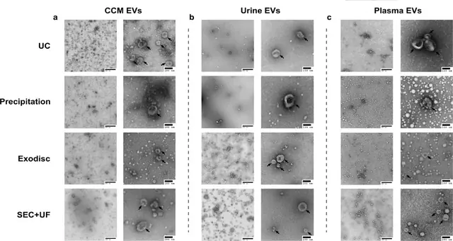
怎么读这张图
每类样本左侧为低倍（标尺 500 nm）、右侧为高倍（标尺 100 nm）负染 TEM 图，黑色箭头标出作者认为符合 EV 形态标准的颗粒。怎么读：负染 TEM 下 EV 常呈“杯状”（这是干燥制样造成的伪影，不是天然形态）；低倍图用来判断背景是否“干净”——背景中大量无膜的电子致密小点或成团物质，提示蛋白/脂蛋白等非 EV 成分。TEM 只能证明“有囊泡”，不能定量纯度，且操作者挑选的视野往往好于随机视野，建议同时报告低倍全景图。
TEM images confirmed presence of negative‐stained EVs, seen as cup‐shaped vesicles. Representative image of (a) CCM EV preparations, (b) urine EV preparations, (c) plasma EV preparations separated by different methods. Scale bar represented 500 nm in figures with low magnifications on the left side and 100 nm in figures with high magnifications on the right side in each sample. Black arrows pointed out particles with a morphology that meets the criteria of EVReproduced from Dong L, Zieren RC, Horie K, et al., 2020, J Extracell Vesicles Figure 5, CC BY 4.0, no changes. DOI · PMC · 文献 [5]
怎么读这张图
（A）SEC 合并组分中可见直径约 80–200 nm 的单个囊泡，膜结构清楚；（B）PEG 沉淀样品中找不到囊泡，整张载网被电子致密颗粒覆盖，原文解读为污染物共沉淀；（C）PROSPR 方法得到的是多层同心囊泡，多数 300–500 nm。怎么读：冷冻电镜在水合状态下成像，EV 呈圆形双层膜（不出现杯状伪影）；“好”的制备物背景干净、能看到清晰的膜；如果整片是无结构的致密物，即使 NTA 颗粒数很高，也说明大部分“颗粒”不是 EV。
Cryo-EM images. (A) Pooled SEC fractions showed single vesicles of size between 80–200 nm. (B) No vesicles were found in Cryo-EM images from PEG precipitated samples. Electron dense particles covered the whole grid indicating co-precipitation of contaminants. (C) PROSPR isolated vesicles were visualized as concentric multi-layered vesicles, mostly measuring from 300 to 500 nm. Scale bars are shown for each image.Reproduced from Gámez-Valero A, Monguió-Tortajada M, Carreras-Planella L, et al., 2016, Sci Rep Figure 5, CC BY 4.0, no changes. DOI · PMC · 文献 [19]
怎么读这张图
（a）2 万 g 离心沉淀的尿液 EV 冷冻电镜：大小、密度、形态差异很大，箭头所示为尿调素（uromodulin，即 THP）聚合物，似乎将 EV 网罗其中；右图高倍可见膜外刺状结构（可能为糖萼）；（b）10 万 g 超速离心沉淀的负染 TEM：大量形态各异的 EV，杯状形态来自 TEM 制样；（c）超分辨显微下单个 EV 上 CD81（青）与 Klotho（品红）的纳米级分布。怎么读：同一份样本在冷冻电镜下是圆形、在负染下是杯状，这是制样方式差异，不代表质量好坏；尿液样本要特别留意尿调素纤维。
uEV microscopy. (a) Urinary EVs (uEVs) were isolated by centrifugation (20,000 × g pellet) and processed for cryoelectron microscopy (as described in (Musante et al., 2020)). The left image shows a wide variety of EVs in size, density and shape. In addition, polymers of uromodulin are shown which seem to entrap uEVs (see arrows). The right image shows a higher magnification of uEVs demonstrating spike like structures emerging from the phospholipid bilayer which likely represents the glycocalyx of some uEVs. (b) uEVs were isolated with ultracentrifugation (100,000 × g pellet) and processed for transmission electron microscopy (TEM) using a negative staining protocol (as described in (Puhka et al., 2017)). To the left there is a lower magnification image displaying a large number and variety of uEVs in size, shape and density. The right image shows a higher magnification demonstrating the uEV heterogeneity with differential staining densities and some spike like surface features that can be visualized despite the cup shape morphology which is due to the processing of TEM. (c) Super‐resolution images were obtained using a Nanoimager S Mark II microscope from ONI (Oxford Nanoimaging) equipped with 405 nm/150 mW, 473 nm/1 W, 560 nm/1 W, 640 nm/1 W lasers and dual emission channels split at 640 nm. The figure shows uEVs stained for CD81 (cyan) and Klotho (magenta) using primary antibodies conjugated with Alexa Fluor 555 and 647 respectively. Representative images with zoomed in insets show the expression and nanoscale distribution of the peptide and tetraspanin on the surface of two representative EVs bound to the coverslip surface. Two‐channel dSTORM data was acquired sequentially at 30 Hz in total internal reflection fluorescence (TIRF) mode. Single molecule data was filtered using NimOS (Version 1.7.1.10213, ONI) based on point spread function shape, photon count and localization precision to minimize background noise and remove low precision localizationsReproduced from Erdbrügger U, Blijdorp CJ, Bijnsdorp IV, et al., 2021, J Extracell Vesicles FIGURE 1, CC BY 4.0, no changes. DOI · PMC · 文献 [39]
怎么读这张图
（A–F）还原处理前的低速离心沉淀 P21：可见单层囊泡和内含小囊泡的多层结构，以及 Tamm-Horsfall 蛋白（THP）的长丝状聚合物（箭头），有的包裹囊泡（*），有的吸附囊泡（#）；（G1–G6）经还原剂 TCEP 处理后，看不到 THP 纤维。怎么读：尿液中 THP 聚合物会把 EV 拖进低速沉淀里、或混入超速离心沉淀，导致丢失或污染；用还原剂打散 THP 网络后，EV 视野更“干净”。注意：本图使用的还原剂是 TCEP，不是 DTT；DTT 处理的经典做法见尿液 EV 立场文件与文献 [38]，但本次未找到 CC BY 授权的 DTT 前后对比图。
Gallery of Cryo-TEM images of urinary EVs recovered in the relative low centrifugation pellet P21 before and after TCEP reduction (P21TCEP). A heterogeneous population of uEVs was observed including single layered vesicles and multiyered structure with two or more inner small vesicles encapsulated inside bigger vesicles before (A–F) and after TCEP treatment (G1–G6). Tamm-Horsfall protein (THP) long polymeric filaments (indicated by arrows) (A) either engulfing (*) (C) or adsorbing (#) vesicles (B and b1) were also visible. No filaments of THP were visible (G1–G6) after TCEP reduction.Reproduced from Musante L, Bontha SV, La Salvia S, et al., 2020, Sci Rep Figure 2, CC BY 4.0, no changes. DOI · PMC · 文献 [47]
怎么读这张图
（A）单个囊泡；（B、K）双囊泡；（C、L）双层膜囊泡；（C–F、L）多层囊泡；（G–J、L）腔内含电子致密内容物的囊泡；（K、M）膜破损的囊泡；黑箭头指双层膜囊泡，白箭头指“保龄球瓶”形囊泡。标尺 50 nm。怎么读：冷冻电镜下 EV 呈完整的圆形脂双层膜，能分辨多种亚型；脑脊液样本量少、EV 含量低，冷冻电镜可以直接确认“提到的是膜性囊泡”。原文同时给出对照组的图（Fig 4），本图只展示 PD 患者样本。
Cryo-EM images of EVs isolated from pooled CSF of Parkinson's disease patients. (A) Single vesicles; (B, K) double vesicles; (C, L) double-membrane vesicles; (C-F, L) multilayer vesicles; (G-J, L) vesicles with electron dense cargo in lumen; (K, M) vesicles with broken membrane. The arrows point to vesicle with double membrane (black arrow) and “bowling pin” vesicle (white arrow). Scale bars are 50 nm.Reproduced from Emelyanov A, Shtam T, Kamyshinsky R, et al., 2020, PLoS One Fig 3, CC BY 4.0, no changes. DOI · PMC · 文献 [48]
怎么读这张图
（A）唾液 12 万 g 沉淀的负染电镜，可见约 60 nm 的小囊泡；（B）抗 CD63 免疫金标记，金颗粒位于单个囊泡表面；（C）乳胶珠结合后流式检测 CD63（实心峰为染色样本，空心峰为对照）；（D）Western blot：泳道 1 为唾液总蛋白，泳道 2 为外泌体沉淀，检测 CD63 与 Alix（Actin 为上样参照）。怎么读：这是 2010 年的经典示例，正面标志物齐全；但按 MISEV2023 的标准，还应补充阴性/污染标志物（如唾液中的淀粉酶、黏蛋白等高丰度蛋白）以及颗粒定量，本图未包含这些内容。
EM image of human saliva showing round-shaped exosomes. The 120,000×g pellets from saliva were used for exosomes analysis. (A) Electron micrographs of saliva exosomes were fixed in 2% formaldehyde and contrasted using 2% uranyl acetate. The image shows small vesicles of ∼60 nm in diameter. (B) Exosomes were labeled with immunogold anti-CD63. Note the immunoreactivity of CD63 on the surface of the single exosome. (C) Representative FACS analysis of exosomes showing expression of CD63. Open trace shows the saliva exosomes, filled trace shows saliva exosomes incubated with latex beads and stained with anti-CD63 followed by secondary Alexa Fluor 488-conjugated antibody. (D) Western blot analysis of saliva exosomes using an antibody against CD63 and Alix. Lane 1 is the protein extract of normal saliva, and lane 2 contains protein from the exosome pellet obtained from ultracentrifugation.Reproduced from Palanisamy V, Sharma S, Deshpande A, et al., 2010, PLoS One Figure 1, CC BY 4.0, no changes. DOI · PMC · 文献 [49]
怎么读这张图
（A）商品化 LDL：高电子密度、圆形并聚集；（B）细胞系来源微囊泡（MV）呈囊泡形态；（C）LDL 与 MV 体外混合 1 小时后，电子致密的 LDL 大量结合并覆盖在 MV 表面，并形成与囊泡大小相当的聚集体；（D）细胞系来源外泌体；（E）外泌体与 LDL 混合后表面同样被 LDL 覆盖，图中与外泌体大小相当的电子致密颗粒为 LDL 聚集体。（所有标尺 500 nm）怎么读：血浆 EV 电镜图中若看到大量实心、深染、无膜的圆形颗粒或附着在囊泡表面的致密物，应考虑脂蛋白污染；这也是 NTA/流式会把脂蛋白误计为 EV 的原因。
LDL binds onto isolated MVs and EXOs in vitro. (A,B) TEM analysis of commercial LDL (A) and cell line-derived MVs (B) using the “osmification-on-grid” method. LDL particles appear as highly electron-dense, round structures and show aggregation (A) (scale bars: 500 nm). MVs isolated from the conditioned media of a cell line had vesicular morphology (B) (scale bars: 500 nm). (C) TEM images obtained after in vitro mixing of commercial LDL with cell-derived MVs for 1 h at room temperature (scale bar: 500 nm). Electron-dense LDL was observed to bind extensively onto MVs, to cover their surfaces, and to form aggregates in the size range of the vesicles. Note that almost all MVs were covered with LDL particles to various extents. (D) TEM picture of cell line-derived EXOs (scale bar: 500 nm). (E) Images of cell line-derived EXOs in vitro mixed with commercial LDL. Note that the surfaces of the EXOs are covered with LDL particles. The electron dense particles in the size range of EXOs represent LDL aggregates (scale bar: 500 nm).Reproduced from Sódar BW, Kittel Á, Pálóczi K, et al., 2016, Sci Rep Figure 7, CC BY 4.0, no changes. DOI · PMC · 文献 [22]
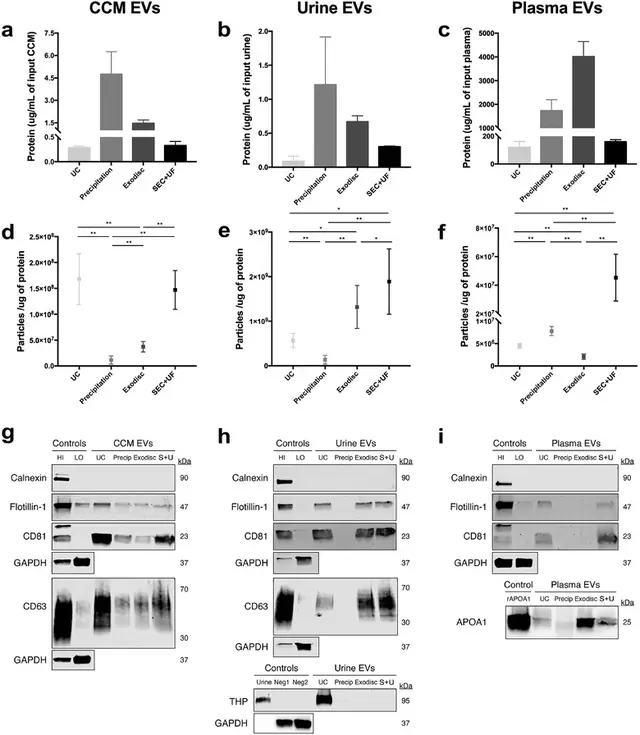
怎么读这张图
上排（a–c）为各方法所得制备物的蛋白量，中排（d–f）为颗粒/蛋白比，下排（g–i）为 Western blot：EV 阳性标志物 flotillin-1、CD63、CD81；细胞内阴性对照 calnexin；尿液中另检测 Tamm-Horsfall 蛋白（THP，尿调素），血浆中另检测载脂蛋白 APOA1（HDL 标志）。怎么读：“好”的结果是 EV 标志物条带清楚、calnexin 在 EV 泳道缺失（只在细胞膜组分对照 HI 中出现）、样本特异性污染物（THP、APOA1）弱或缺失，同时颗粒/蛋白比较高；沉淀类方法蛋白量高、颗粒/蛋白比低，是蛋白共沉淀的典型表现。图中可见尿液 THP 条带主要出现在 UC 泳道，血浆 APOA1 在多种方法泳道中均可见（请以原文统计为准）。
Purity of EV samples assessed by particle/protein ratio and Western blotting. (a)‐(c) The protein concentrations of EV preparations separated by different methods from CCM, urine and plasma. The protein concentrations have been corrected for initial sample input volume. (d)‐(f) The particle/protein ratios of EV preparations separated by different methods from CCM, urine and plasma. The particle numbers were measured by nFCM. The error bars represented the standard deviation of three repetitive experiments. *P < 0.05, **P < 0.01, one‐way ANOVA analysis with Tukey multiple comparison test as well as a variance‐covariance model. (g) Western blots of flotillin‐1, CD63, CD81, and calnexin for EV preparations separated from CCM by different methods. 9 μg of protein from each EV preparation was loaded. (h) Western blots of flotillin‐1, CD63, CD81, THP and calnexin for EV preparations separated from urine by different methods. 3.3 μg of protein from each EV preparation was loaded. (i) Western blots of flotillin‐1, CD81, APOA1 and calnexin for EV preparations separated from plasma by different methods. 25 μg of protein from each EV preparation was loaded. MCF7 membrane and cytosolic protein fractions served as positive and negative controls for flotillin‐1, CD63, CD81 and calnexin. Whole urine sample was used as positive control and MCF7 cellular fractions as negative control for THP. Recombinant human Apolipoprotein A1 served as positive control for APOA1.GAPDH staining was to show proper loading and running of the cytosolic MCF7 fractionReproduced from Dong L, Zieren RC, Horie K, et al., 2020, J Extracell Vesicles Figure 6, CC BY 4.0, no changes. DOI · PMC · 文献 [5]
怎么读这张图
每种方法取 4 µg 蛋白上样，同时检测 EV 标志物 CD63、TSG101 与脂蛋白标志物 APOB（LDL/VLDL）、APOE；（B）为三次分离的条带定量。怎么读：血浆/血清 EV 报告不能只放 CD63/TSG101，“好”的结果应是 EV 标志物明显、而 APOB/APOE 尽量弱；图中可见沉淀法与单独 SEC 泳道的 APOB/APOE 信号较明显，而含密度梯度（DG-UC）的组合方案 EV 标志物更突出（定量与统计以原文为准）。这说明 SEC 与沉淀都会带入脂蛋白，密度步骤是去除脂蛋白的关键。
Western blot analysis of EV markers, CD63 and TSG101, and lipoprotein markers, APOB, and APOE. (A) 4 µg of vesicular protein isolated from 200 µl human serum using each method alone or in combination were separated by SDS–PAGE and immunoblotted with anti-human CD63 (H-193 and H5C6), TSG101, APOE and APOB antibodies. Representative images are shown. (B) Graph: Densitometric quantitation of the distribution of CD63, TSG101, APOE and APOB protein expression in each method. Black lines represent medians. N = 3 isolations. Arbitrary Units (AU) = (signal intensity method)/Sum (signal intensity method1–8).Reproduced from Brennan K, Martin K, FitzGerald SP, et al., 2020, Sci Rep Figure 6, CC BY 4.0, no changes. DOI · PMC · 文献 [7]
怎么读这张图
（a）血浆/血清上 SEC 柱后，各组分颗粒（蓝，NTA）与蛋白（绿，BCA）占比：颗粒峰出现在较早的组分，大量可溶蛋白在后段组分洗脱，两峰分开正是 SEC 的价值；（b）四跨膜蛋白 CD9/CD63/CD81 的 ELISA 分布与颗粒峰大体重合；（c）Western blot 显示 EV 标志 flotillin-1 与 HDL 标志 Apo-A1 在组分 7–12 中都能检出；（d、e）负染 TEM 中黑箭头为杯状 EV 样结构，白箭头为脂蛋白样颗粒。怎么读：好的 SEC 结果是“颗粒峰与蛋白峰分离、EV 标志物集中在颗粒峰”；但本图同时提示，血浆中 HDL 与 EV 尺寸重叠，单用 SEC 无法去除，需要加做密度步骤或检测 ApoA1/ApoB。
Evaluation of EVs isolated with size-exclusion chromatography (SEC). One millilitre of plasma or serum was loaded onto 10 mL Sepharose CL-2B columns, and up to 30 fractions of 500 µL were collected from each column. a Concentrations of particles and proteins in the SEC fractions were determined with nanoparticle tracking analysis (NTA; ZetaView®, blue) and BCA (green), respectively. Data are presented as the percentage of the total amount of particles or proteins in fractions 5–16. N = 4–6, and the results are presented as the average ± SEM. b ELISA was used to determine the expression of CD9, CD63, and CD81 on the vesicles in the SEC fractions. Data are presented as the percentage of the total expression for each protein in fractions 5–16. N = 3–5, and the results are presented as the average ± SEM. c Presence of the vesicle marker flotillin-1 and the HDL marker Apo-A1 was determined in fractions 7–12 (40 µL/fraction) with Western blot. d, e Fifteen microliters (1–20 µg protein) from fractions 8–11 were loaded onto grids, negative stained, and evaluated with electron microscopy. Examples of EV-like structures (cup-shaped) are indicated by black arrows, and examples of lipoprotein particle-like structures (white structures) are indicated by white arrows. e Enlargements from fraction 8–10 from the plasma sample showed in d. Scale bars are 200 nm in d and 100 nm in eReproduced from Karimi N, Cvjetkovic A, Jang SC, et al., 2018, Cell Mol Life Sci Fig. 2, CC BY 4.0, no changes. DOI · PMC · 文献 [17]
怎么读这张图
（a）血浆经 UC 后再做密度梯度离心，8 个组分（顶部标注密度 1.076–1.313 g/mL）等体积上样，检测 flotillin-1 和 CD81；（b）作者把组分分成低（<1.10）、中（1.10–1.15）、高（>1.15）三组并配 TEM：低密度组见脂质/脂蛋白等非 EV 颗粒，中密度组见杯状 EV，高密度组见蛋白聚集体等；（c–h）各方法制备物在三组中的颗粒比例与浓度。怎么读：EV 标志物应集中在约 1.10–1.15 g/mL 的中间组分；若大量颗粒落在低密度组（血浆中提示脂蛋白）或高密度组（蛋白聚集体），说明前一步分离的特异性不足。
Composition analysis of EV preparations DGUC. (a) Western blots of flotillin‐1 and CD81 for different fractions (n = 8) separated from 8 ml of plasma by UC, followed by DGUC fractionation. The same volume of each fraction was loaded regardless of their protein amount. (b) Schematic diagram of the study design and representative TEM images of each density fraction group. Non‐EV particles, like lipids and lipoproteins, were found in low‐density fractions, cup‐shaped EVs were seen in the middle fraction and protein aggregates and other particles were observed in high‐density fractions. Scale bar represented 100 nm. (c)‐(e) Proportions of fraction groups with different densities in EV preparations from CCM, urine and plasma separated by different methods. (f)‐(h) The particle concentration of each fraction group in EV preparations from CCM, urine and plasma separated by different methods. The particle numbers were measured by nFCM. The particle concentrations have been corrected for sample input volumes. The error bars represented the standard deviation of three repetitive experimentsReproduced from Dong L, Zieren RC, Horie K, et al., 2020, J Extracell Vesicles Figure 9, CC BY 4.0, no changes. DOI · PMC · 文献 [5]
怎么读这张图
（a）血浆加在碘克沙醇密度垫上超速离心后出现两条带：低密度带（<1.025 g/cm³）与高密度带（约 1.06–1.16 g/cm³）；（b）两条带分别再过 SEC，测各组分颗粒与蛋白；（c）低密度带与高密度带的颗粒数倍数比较；（d）Western blot：EV 标志 flotillin-1、TSG-101 与 HDL 标志 Apo-A1 在两条带各组分中的分布；（e）负染 TEM。怎么读：原文用这一组合来把 EV 从脂蛋白和血浆蛋白中分出来；判读时看高密度带的 SEC 组分中 TSG-101 等 EV 标志物是否保留、Apo-A1 等脂蛋白信号是否相对减少——这比单用一种方法更接近“干净”的血浆 EV。具体结论请以原文结果部分为准。
Evaluation of EVs isolated with the combination of density cushion and size-exclusion chromatography (IDC + SEC). Six millilitres of plasma were loaded on top of a density cushion (50%/30%/10% iodixanol), and visible bands after ultracentrifugation were further loaded onto 10 mL Sepharose CL-2B columns, and up to 30 fractions of 500 µL each were collected. a After centrifuging of the plasma sample on top of the cushion, two bands were visible. One band contained material floating above 1.025 g/cm3 (low-density band), and the second band contained material floating at approximately 1.06–1.16 g/cm3 (high-density band). b Low-density and high-density bands were loaded onto individual SEC columns, and fractions were collected. The concentrations of particles and proteins in the SEC fractions were determined by nanoparticle tracking analysis (NTA; ZetaView®, blue) and BCA (green), respectively. Data are presented as the percentage of the total amount of particles or proteins in fractions 5–16. N = 3, and the results are presented as the average ± SEM. c Total number of particles was determined by ZetaView® in fractions 5–16 from the high-density and low-density bands isolated from the same plasma samples, and the fold change was calculated. N = 3, and the results are presented as the average ± SEM. LD low-density, HD high-density. d Presence of the vesicle markers flotillin-1 and TSG-101 as well as the HDL marker Apo-A1 was determined by Western blot of fractions 7–14 (40 µL/fraction) isolated from both the high-density and low-density band. e Fifteen microliters (1–6 µg protein) from fractions 8–10 from the high-density and low-density bands were loaded onto grids, negative stained, and evaluated with electron microscopy. Scale bars are 200 nmReproduced from Karimi N, Cvjetkovic A, Jang SC, et al., 2018, Cell Mol Life Sci Fig. 4, CC BY 4.0, no changes. DOI · PMC · 文献 [17]
怎么读这张图
左侧为七类方法的原理小图（沉淀 P、差速超速离心 dUC、过滤浓缩 FC、密度梯度 DG、SEC、免疫/亲和沉淀 IP/AP、非对称流场流分离 AF4），右上为“回收率–特异性”坐标，蓝色虚线箭头表示方法组合后特异性提高。怎么读：越靠左上回收率高但特异性低（如沉淀），越靠右下特异性高但回收率低（如 IP、AF4）；原文特别指出很多“外泌体提取试剂盒”本质是沉淀，得到的是各种细胞外颗粒的混合物，而不是纯外泌体。这是示意图，不是测量数据。
Position of some EV separation and concentration methods on a recovery (yield) versus specificity grid. Dashed blue arrows indicate combinations of methods resulting in increased specificity. Specificity can be of different types: Size exclusion chromatography (SEC) separates EVs by size from many (but not all) NVEPs, but all EV types are recovered together, while differential ultracentrifugation (dUC) separates EV subtypes based on their size/weight, but also co‐isolates NVEPs at high speeds. Note that many ‘exosome purification’ kits use precipitation (P), thus do not isolate pure exosomes or even EVs but a mixture of EPs, while some use affinity precipitation (AP), which may be more specific to EVs but not exosomes. Those who develop new methods should consider positioning their EV outcomes on such a graph.Reproduced from Welsh JA, Goberdhan DCI, O'Driscoll L, et al., 2024, J Extracell Vesicles FIGURE 2, CC BY 4.0, no changes. DOI · PMC · 文献 [1]
怎么读这张图
（a）死端过滤与切向流过滤的原理示意：TFF 液流平行于膜面，减少滤膜堵塞；（b）EV 产量（TFF 显著高于 UC）；（c）三次重复的粒径分布（虚线 UC，实线 TFF）；（d、e）UC 与 TFF 所得 EV 的 TEM；（f）TFF 样品 Western blot：EV 中检出 CD63、CD81，不含细胞内标志 calnexin（H 为细胞匀浆对照）；（g）每 10⁶ 个 EV 的白蛋白残留，TFF 低于 UC。怎么读：一张合格的方法比较图应同时给出产量、粒径、形貌、阳性/阴性标志物和一个“污染物”指标（这里是白蛋白），而不是只比颗粒数。
Biophysical and biochemical characterization of extracellular vesicles (EVs) isolated from MDA-MB-231 breast cancer cell culture media using ultracentrifugation (UC) or tangential flow filtration (TFF). (a) Schematic illustrating the difference between dead-end filtration and TFF; (b) EV yield; (c) Size distribution (0–650 nm) of EVs isolated with UC (dashed lines) and TFF (continuous lines); (d,e) Transmission electron microscopy (TEM) of EVs obtained with UC (d) or TFF (e); (f) Western blot of characteristic intracellular (calnexin) and EV (CD63, CD81) markers in samples isolated by TFF; (g) Levels of albumin contaminants in EV samples. Cellular homogenate (H) was used as a control. Data are presented as mean ± s.d. of three biological replicates (b,c) or experimental replicates (g). Statistical significance was evaluated by Student’s t-test. ** p < 0.01.Reproduced from Busatto S, Vilanilam G, Ticer T, et al., 2018, Cells Figure 1, CC BY 4.0, no changes. DOI · PMC · 文献 [4]
怎么读这张图
（A）同一受试者血浆经蔗糖垫超速离心（sUC，红）或 SEC（绿）富集后的 AF4 流场分离图：实线为多角度光散射（LS）信号，虚线为紫外（UV）信号；（B）LS 信号放大，插图为由 MALS 计算的洗脱颗粒几何直径（2×Rgeom），随洗脱时间增大；（C）sUC 样品的颗粒浓度与粒径（N = 8）。怎么读：AF4 中小颗粒先洗脱、大颗粒后洗脱，可以在一次运行中把不同大小的颗粒分开并测粒径；UV 信号高而 LS 信号弱的早期峰通常对应蛋白等小分子量成分。注意：本图是血浆 EV 的 AF4 测量，不是 exomere/supermere 的分离图（见“缺口”说明）。
Quantification of enriched nanoparticles from human blood plasma by AF4-UV-MALS. (A) Representative fractogram. Representation of MALS (LS) and UV signals in relation to elution time in sample from subject 9 (S9) after sUC or SEC. Dotted lines present UV signals, solid lines present MALS signals. (B) Representative fractogram. Magnification of the MALS(LS) signal. The inset represents calculated size of eluted particles, presented as 2*Rgeom. (C) Particle size and concentration in samples after sUC. Each circle or triangle presents one sample. N = 8. AF4-UV-MALS asymmetrical flow field-flow fractionation with ultraviolet and multi-angle light scattering detectors, sUC sucrose cushion ultracentrifugation, SEC size exclusion chromatography, Rgeom geometric radius.Reproduced from Holcar M, Ferdin J, Sitar S, et al., 2020, Sci Rep Figure 2, CC BY 4.0, no changes. DOI · PMC · 文献 [46]
两处缺口：exomere 的 AF4 洗脱曲线 [30] 和尿液 DTT 处理前后对比 [38] 没有找到开放许可的原图，这里不转载，请看原文：Zhang 2018 · Fernández-Llama 2010。
（编号与 referencesv1.1.json 一致；全部条目已经 PubMed E-utilities 与 Crossref API 核验。[46]–[49] 为 v1.1 新增，仅作为页面转载的文献原图出处，不支撑正文中的任何陈述。）